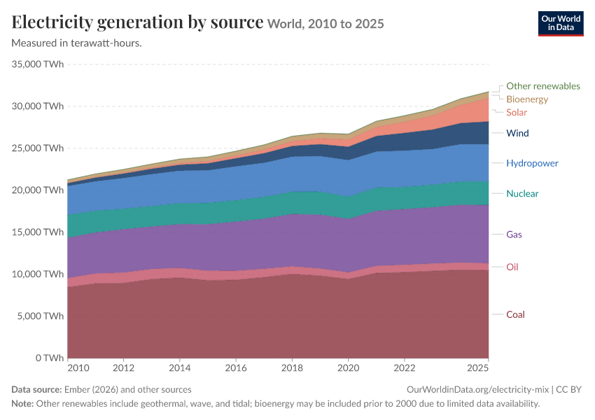
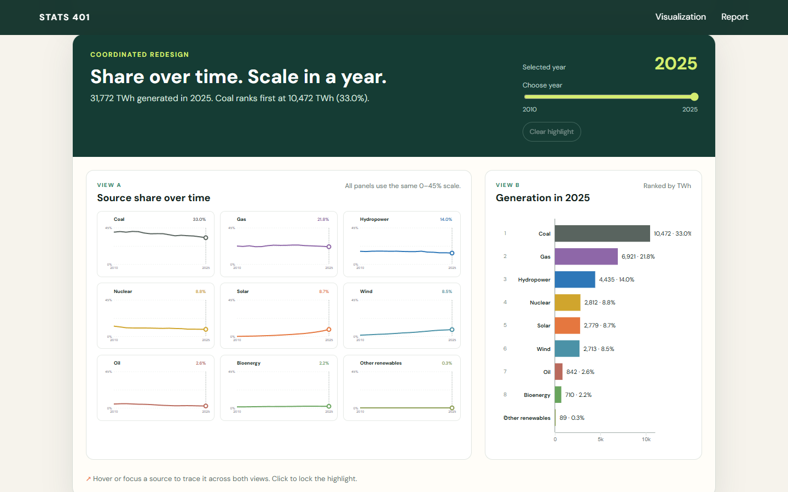

A fair critique of a strong overview chart, followed by a coordinated redesign for comparing sources, shares, and selected-year generation.
Place
World
Period
2010–2025
Measure
Annual TWh
Sources
9
Part 1
GitHub Pages Visualization
Two readings of the same electricity-generation data: historical share and selected-year scale.
Original visualization
Electricity generation by source
Our World in Data’s stacked-area chart shows annual global generation from nine sources in terawatt-hours from 2010 through 2025. The layers make total generation and each source’s contribution to that total visible in one compact form.
Scope note: electricity generation is not the same as total energy consumption. Electricity is one part of the wider energy system.

Original: “Electricity generation by source,” World, 2010–2025, annual generation in TWh. Source: Our World in Data; data from Ember (2026) and other sources. Accessed 2026-09-27. View the original visualization.
Coordinated redesign
Share over time. Scale in a year.
Loading the frozen dataset…
Selected year2025
20102025
View A
Source share over time
All panels use the same 0–40% scale.
View B
Generation in 2025
Ranked by TWh
↗ Hover or focus a source to trace it across both views. Click to lock the highlight.
Part 2
Visualization Critique and Redesign Report
A comparison centered on viewer tasks and perceptual accuracy.
Original visualization and context
Our World in Data’s “Electricity generation by source” chart presents annual global electricity generation from 2010 to 2025 in terawatt-hours. Its nine stacked layers represent coal, oil, gas, nuclear, hydropower, wind, solar, bioenergy, and other renewables. The intended message is twofold: total electricity generation has grown, and the contribution of individual sources has changed within that total. The likely audience includes the general public, journalists, students, and energy or policy readers. Their main tasks are to understand total growth, identify the largest contributors, observe mix changes, compare established and emerging sources, and notice recent wind and solar growth. The measure is electricity generation, not total energy consumption, and the display does not by itself establish why any source rises or falls.
Figure 1. Original OWID stacked-area visualization: World electricity generation by source, 2010–2025. Source: Our World in Data; Ember (2026) and other sources.
Critique
The original has real strengths. First, stacking makes the additive structure explicit: the layers form total electricity generation, so the top boundary efficiently communicates cumulative growth. Second, time uses a familiar horizontal axis, while direct labels at the right edge reduce trips to a separate legend. Restrained annotation and recognizable source colors also establish a clear visual hierarchy.
Its main weakness follows from the same stacking. Only coal, the bottom layer, has a fixed zero baseline. Gas, hydropower, nuclear, wind, and solar sit above changing layers, so comparisons such as gas versus hydropower or wind versus solar depend on judging band thickness and area. Position on a common scale is perceived more accurately than thickness without a shared baseline; direct labels identify the bands but do not repair that comparison problem.
Second, the physically thin bands for solar, wind, bioenergy, and other renewables compress rapid relative growth, crossovers, and year-to-year trajectories. Their values remain visible, but are harder to compare precisely than the large fossil-fuel layers. This matters because recent mix change is a central viewer task. Third, absolute TWh and mix change are conflated. A source can gain TWh while its percentage share stays flat or falls as total generation grows. The chart is effective for the additive-total question, but weaker for asking how each source’s share is changing.
Redesign rationale
The first redesign decision replaces stacked areas with nine small-multiple share lines. Every panel uses the same zero baseline and shared percentage maximum, changing the key encoding from moving-band thickness to position on a common scale. Separate panels also keep smaller sources from being squeezed between larger ones. The panels are ordered by the latest share, making present-day comparison easier without hard-coding a ranking.
The second decision separates a relative trend view from an absolute view. Share lines isolate the transition in the electricity mix, while the selected-year bars preserve the original’s TWh question. This distinction prevents growth in total output from being mistaken for growth in share. The third decision replaces within-year layer-thickness comparison with ranked horizontal bars. Bar length begins at zero, source names have room to remain legible, and direct TWh and percentage labels support exact reading. A coordinated slider moves all selected-year dots, reranks the bars, and updates the summary; linked hover, focus, and click highlighting lets viewers follow one source across both views.

Figure 2. Coordinated redesign showing source shares over time and ranked generation for the selected year. Source data: Our World in Data, adapted from Ember, Pinto et al., and Energy Institute.
Original vs. redesign
After the redesign, a viewer can compare any two sources against the same scale, see whether each share is rising or falling, notice the acceleration of smaller sources, rank sources in a chosen year, and read exact TWh and share values. The original still wins at one task: its single cumulative silhouette communicates historical total generation immediately. The redesign instead makes the two analytical questions explicit and coordinated.
Trade-offs and limitations
That gain costs screen space and compactness. Nine panels require scanning, and the redesign loses the stacked area’s immediate single-shape impression of the entire cumulative historical total. The ranked bars restore absolute magnitude only for the active year, not for every year simultaneously. The common share scale also leaves empty space in panels for small sources, but that emptiness is meaningful: it preserves honest cross-source comparison. Overall, the redesign intentionally prioritizes source-to-source comparison, mix change, and precise reading over a compact overview.
Ember (2026); Energy Institute – Statistical Review of World Energy (2026); Pinto et al. (2023); Department for Energy Security and Net Zero of the UK (2023) – with major processing by Our World in Data. “Electricity generation by source” [dataset]. Ember, “Yearly Electricity Data Europe”; Ember, “Yearly Electricity Data”; Energy Institute, “Statistical Review of World Energy”; Pinto et al., “Global historical electricity”; Department for Energy Security and Net Zero of the UK, “UK electricity capacity and generation by fuel between 1920 and 2020” [original data]. Accessed 2026-09-27.
Our World in Data. “Electricity Mix.” Data and research page. Accessed 2026-09-27.